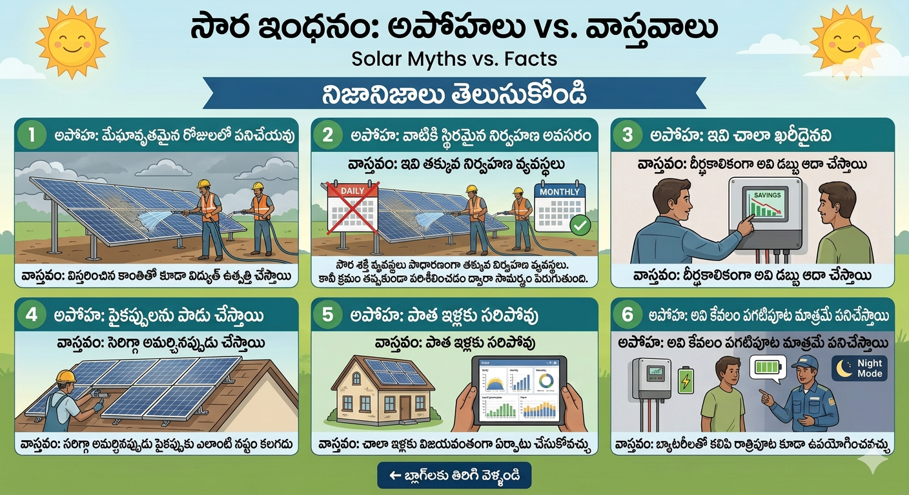

Solar panels only summer లో పని చేస్తాయి.
Solar panels sunlight ఉంటే power generate చేస్తాయి. Cloudy weather లో కూడా power produce అవుతుంది.
Solar system maintenance చాలా ఎక్కువ.
Solar systems low maintenance systems. Regular cleaning చేస్తే చాలును.
⬅ Back to Blogs